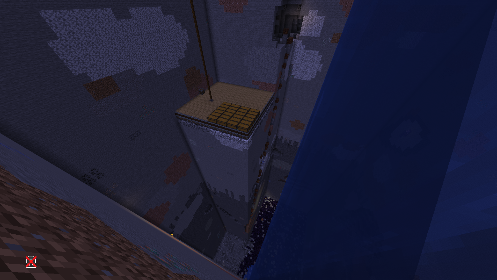

АДМИНИСТРАТОР ПОМЫЛСЯ
Сегодня я помылся. Мне очень понравилось. Повторять больше не буду! :)

НА СПАВНЕ ВЫКОПАЛИ 9 ЧАНКОВ
Это произошло во время прослушивания группы ultra vomit. Два игрока (если их можно так назвать) решили что огромная дыра, застроенная обсидианом должна встречать новичков! Новички в ужасе. Правда в ужасе не от проекта, а от того, что сервак не запущен, хотя всех на него зовут. Короче, пиздец!